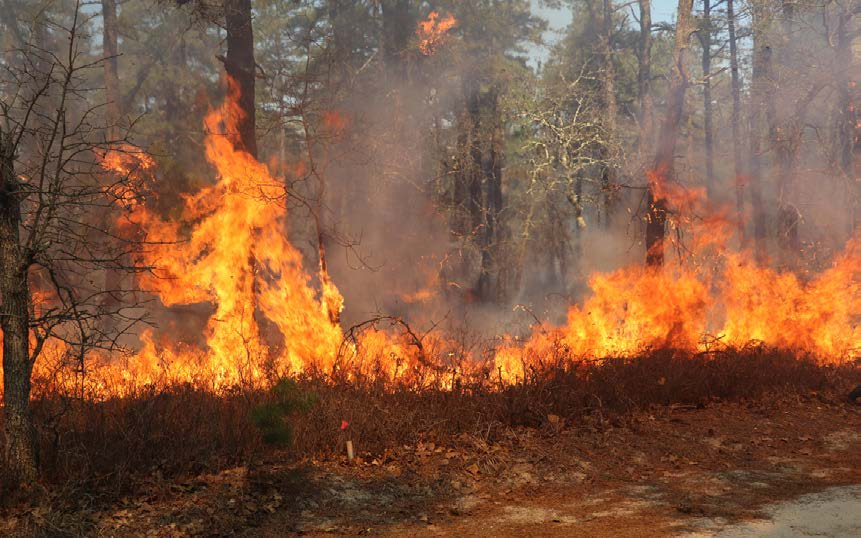

such as butterflies, birds, elephants, snakes, monkeys, lions and leopards. Many organisms depend on forests for food, habitats and breeding grounds. The burning of forests destroys their habitats and may cause the extinction of some organisms. Forests help to prevent soil erosion and retain moisture in the soil. The burning of forests destroys the topsoil and can cause soil erosion, and ultimately lead to the loss of soil moisture and soil fertility. The burning of forests produces carbon dioxide, which causes global warming. Figure 6 shows the destruction of a forest by fire.

To reduce deforestation, people need to use energy serving stoves that use less charcoal or firewood. It is also advisable to use alternative charcoal that burns longer. Furthermore, people are advised to use alternative sources of energy such as solar, wind, water and natural gas for